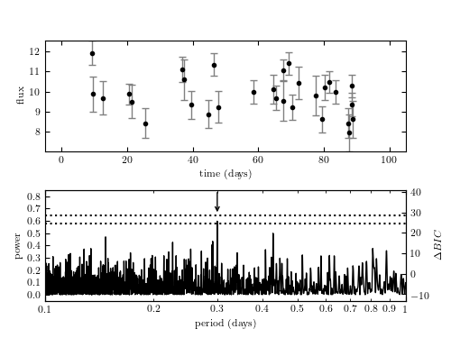

Example of Lomb-Scargle Algorithm¶
Figure 10.15
Example of a Lomb-Scargle periodogram. The data include 30 points drawn from the function y(t|P) = 10 + sin(2pi t/P) with P = 0.3. Heteroscedastic Gaussian noise is added to the observations, with a width drawn from a uniform distribution with 0.5 < sigma < 1.0. Data are shown in the top panel and the resulting Lomb-Scargle periodogram is shown in the bottom panel. The arrow marks the location of the true period. The dotted lines show the 1% and 5% significance levels for the highest peak, determined by 1000 bootstrap resamplings (see Section 10.3.2). The change in BIC compared to a nonvarying source (eq. 10.55) is shown on the right y-axis. The maximum power corresponds to a delta-BIC = 26.1,indicating the presence of a periodic signal. Bootstrapping indicates the period is detected at ~ 5% significance.
{kind=link}
# Author: Jake VanderPlas
# License: BSD
# The figure produced by this code is published in the textbook
# "Statistics, Data Mining, and Machine Learning in Astronomy" (2013)
# For more information, see http://astroML.github.com
# To report a bug or issue, use the following forum:
# https://groups.google.com/forum/#!forum/astroml-general
import numpy as np
from matplotlib import pyplot as plt
from astroML.time_series import\
lomb_scargle, lomb_scargle_BIC, lomb_scargle_bootstrap
#----------------------------------------------------------------------
# This function adjusts matplotlib settings for a uniform feel in the textbook.
# Note that with usetex=True, fonts are rendered with LaTeX. This may
# result in an error if LaTeX is not installed on your system. In that case,
# you can set usetex to False.
if "setup_text_plots" not in globals():
from astroML.plotting import setup_text_plots
setup_text_plots(fontsize=8, usetex=True)
#------------------------------------------------------------
# Generate Data
np.random.seed(0)
N = 30
P = 0.3
t = np.random.randint(100, size=N) + 0.3 + 0.4 * np.random.random(N)
y = 10 + np.sin(2 * np.pi * t / P)
dy = 0.5 + 0.5 * np.random.random(N)
y_obs = np.random.normal(y, dy)
#------------------------------------------------------------
# Compute periodogram
period = 10 ** np.linspace(-1, 0, 10000)
omega = 2 * np.pi / period
PS = lomb_scargle(t, y_obs, dy, omega, generalized=True)
#------------------------------------------------------------
# Get significance via bootstrap
D = lomb_scargle_bootstrap(t, y_obs, dy, omega, generalized=True,
N_bootstraps=1000, random_state=0)
sig1, sig5 = np.percentile(D, [99, 95])
#------------------------------------------------------------
# Plot the results
fig = plt.figure(figsize=(5, 3.75))
fig.subplots_adjust(left=0.1, right=0.9, hspace=0.35)
# First panel: the data
ax = fig.add_subplot(211)
ax.errorbar(t, y_obs, dy, fmt='.k', lw=1, ecolor='gray')
ax.set_xlabel('time (days)')
ax.set_ylabel('flux')
ax.set_xlim(-5, 105)
# Second panel: the periodogram & significance levels
ax1 = fig.add_subplot(212, xscale='log')
ax1.plot(period, PS, '-', c='black', lw=1, zorder=1)
ax1.plot([period[0], period[-1]], [sig1, sig1], ':', c='black')
ax1.plot([period[0], period[-1]], [sig5, sig5], ':', c='black')
ax1.annotate("", (0.3, 0.65), (0.3, 0.85), ha='center',
arrowprops=dict(arrowstyle='->'))
ax1.set_xlim(period[0], period[-1])
ax1.set_ylim(-0.05, 0.85)
ax1.set_xlabel(r'period (days)')
ax1.set_ylabel('power')
# Twin axis: label BIC on the right side
ax2 = ax1.twinx()
ax2.set_ylim(tuple(lomb_scargle_BIC(ax1.get_ylim(), y_obs, dy)))
ax2.set_ylabel(r'$\Delta BIC$')
ax1.xaxis.set_major_formatter(plt.FormatStrFormatter('%.1f'))
ax1.xaxis.set_minor_formatter(plt.FormatStrFormatter('%.1f'))
ax1.xaxis.set_major_locator(plt.LogLocator(10))
ax1.xaxis.set_major_formatter(plt.FormatStrFormatter('%.3g'))
plt.show()